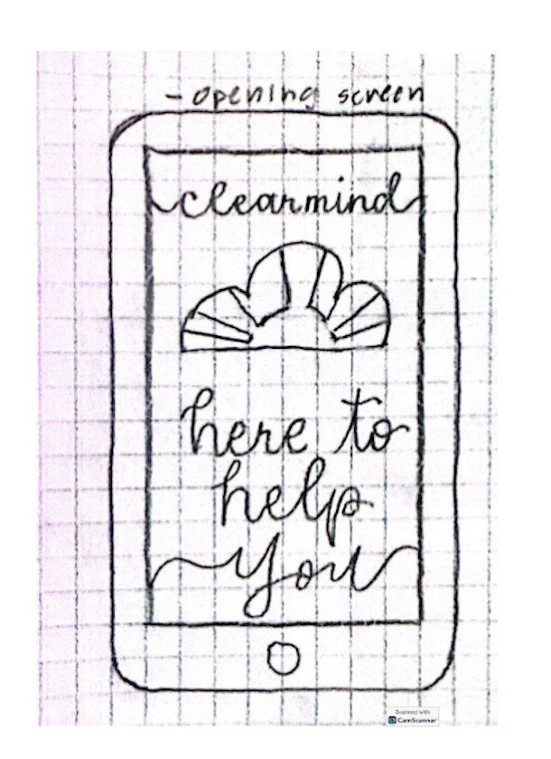
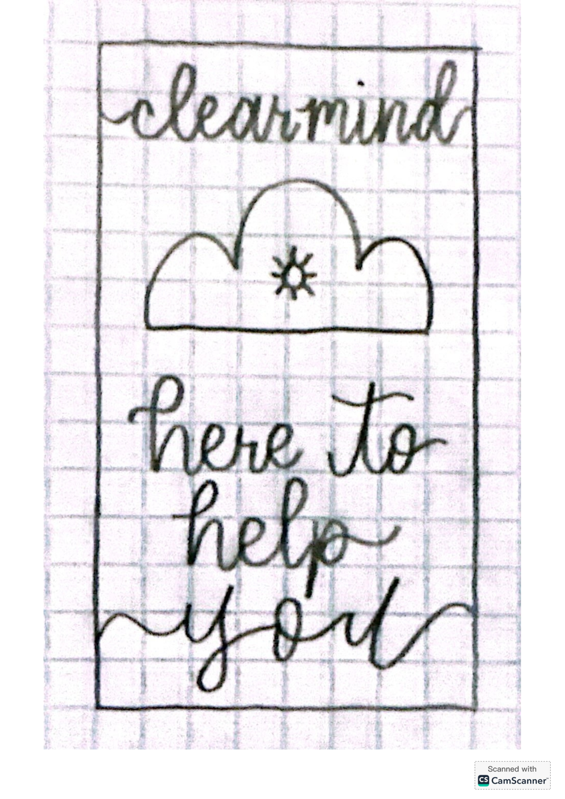

Highlighted Projects
Problem Statement

While many companies are increasingly using ethical AI practices, few are focused on developing ethically based models that prove to still be useful tools to the public.
Affinity Diagram

This diagram presents many of the steps and initial processes that need to occur in order to create a high-level and helpful Artificial Intelligence model that is ethical at a base level. It covers the initial stages of building said model such as funding needs, testing periods, and data gathering. It also expands on the underlying issue of the ethical dilemma that surrrounds AI as well as the tangible, negative affects that AI can have if not used properly.
Sketches
These are concept sketches for a mobile Artificial Intelligence app called "ClearMind". These sketches show the very base level idea that it functions as a chatbot that can answer questions, chat with you, and has a focus on making the world a better place using education and entertainment.
Prototype
A paper prototype of the ethical AI chatbot ClearMind. This video shows all possible user interactions and options that the app interface offers.